Colegio Secundario N.º 7 "Maestro Mario Humberto Pérez"
Institución educativa de gestión pública ubicada en Perico, Jujuy, con orientaciones en Artes Visuales e Informática. Formamos personas preparadas para los cambios, con una actitud realista frente a la vida y un fuerte compromiso con la comunidad.
Vida en el colegio
Momentos de nuestra comunidad. Tocá una foto para verla en grande.
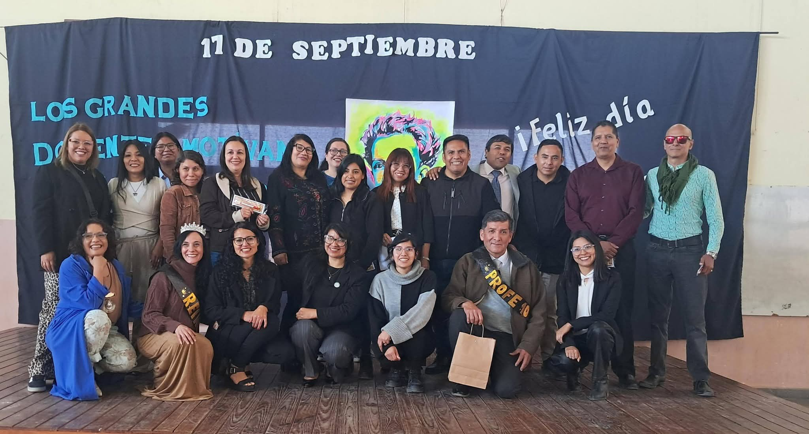
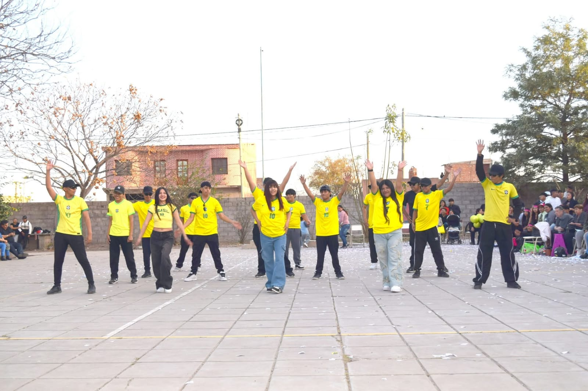
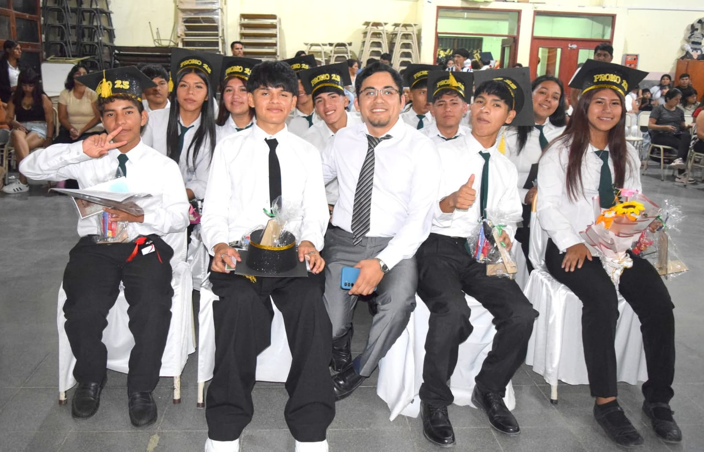
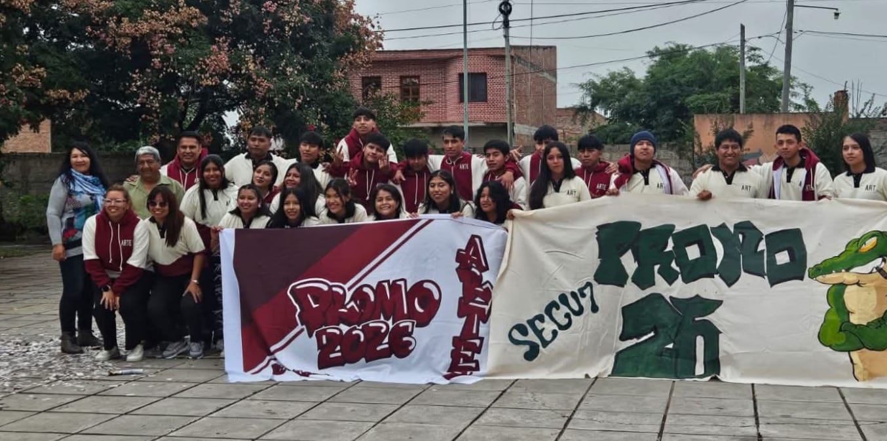
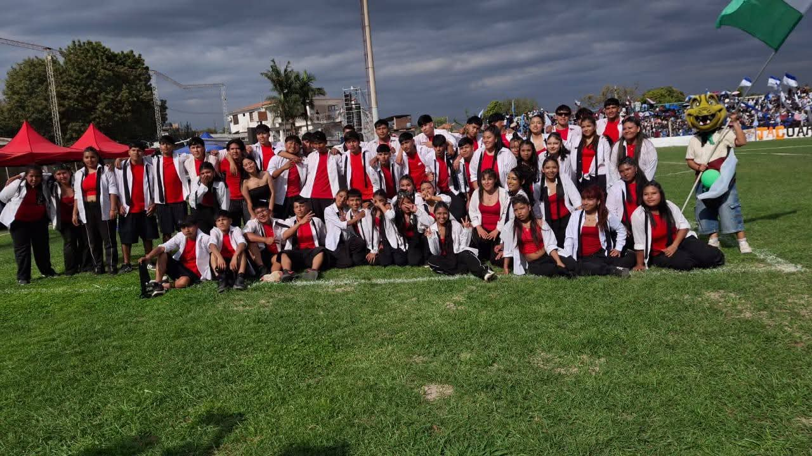
¿Dónde estamos?
Dirección
Polonia S/N, Barrio Loteo Nuevo Perico, Perico, Jujuy (CP Y4610)
Horario
Lunes a viernes, de 7:00 a 19:00
Nuestra Historia
La institución inició sus actividades el 18 de abril de 2005, bajo la dirección de la profesora Norma Torres y el secretario, profesor René Maestro. Comenzó a funcionar bajo las modalidades de Educación General Básica (EGB) y Polimodal, en dependencias de la Escuela Primaria N.º 449 "Municipalidad Ciudad Perico", que cedió tres aulas para dos cursos de octavo año y uno de noveno.
El colegio se trasladó a un antiguo taller ferroviario en calle Belgrano S/N, junto al Banco Nación, acondicionado para el funcionamiento institucional. Allí operaron dos cursos de octavo y dos de noveno año, en turnos mañana y tarde.
VIDEO
El colegio accedió a un edificio propio en calle Polonia S/N, Barrio Loteo Nuevo Perico, Jujuy, a través del programa nacional "700 Escuelas". Inició el ciclo lectivo con cinco cursos y obtuvo su primera promoción de nivel EGB3.
Con la Ley de Educación Nacional N.º 26.206, el sistema de EGB y Polimodal fue reemplazado progresivamente. En 2011, la Resolución N.º 841 estableció la titulación de Bachiller Común y el Ciclo Básico (1° a 3° año), mientras que la Resolución N.º 2168 organizó el Ciclo Orientado (4° y 5° año). Desde 2018, mediante la Resolución N.º 7621, el colegio dicta las orientaciones en Artes Visuales (turno mañana) e Informática (turno tarde), vigentes en la actualidad.
Galería de fotos
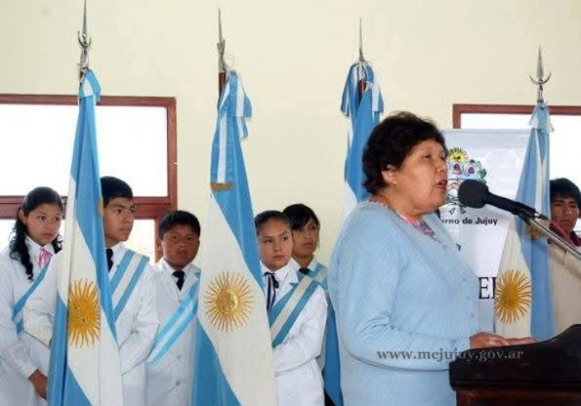
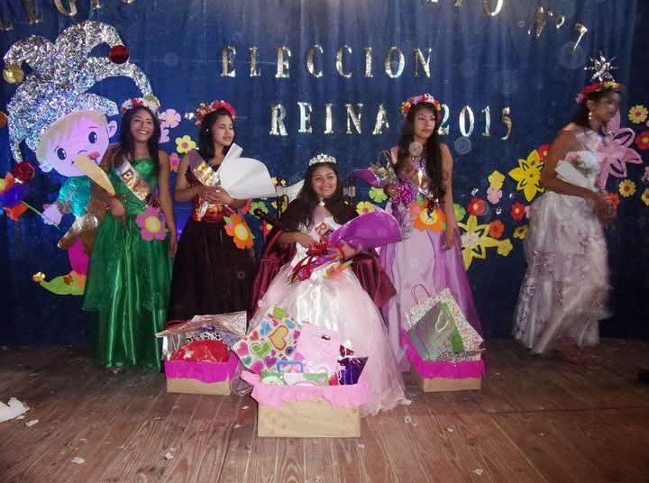
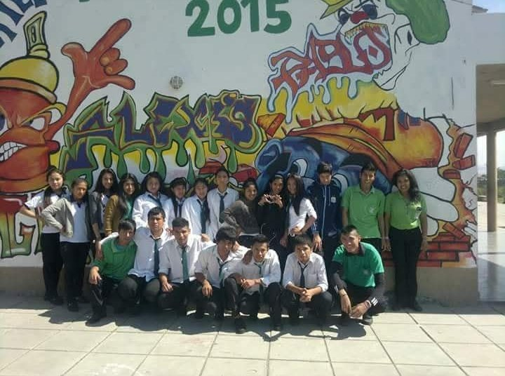
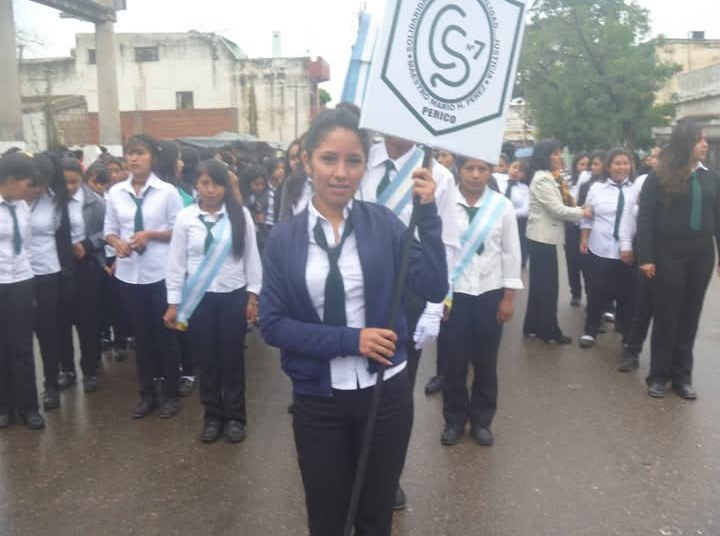
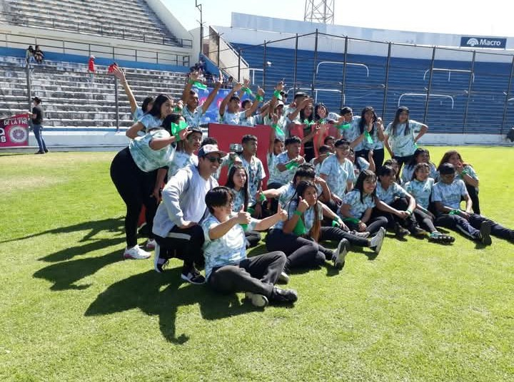
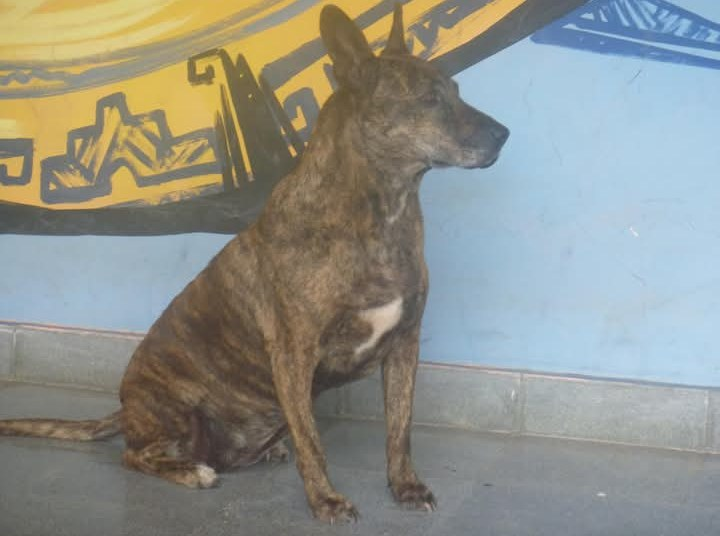
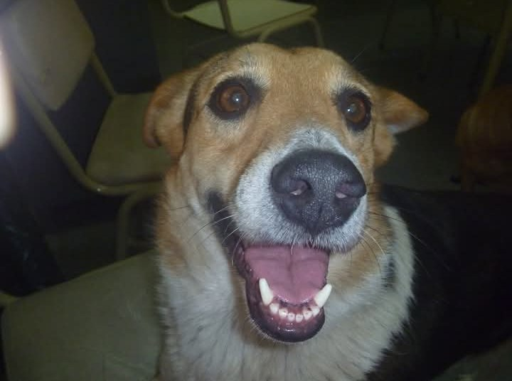
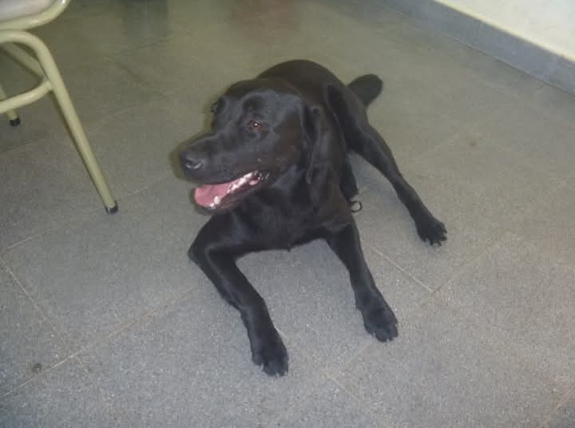
Misión y Visión
Misión
Brindar una formación integral teniendo en cuenta las necesidades socio-económicas y culturales y las demandas científicas y tecnológicas del medio para el desarrollo del país, proporcionando personas preparadas a los cambios con una actitud realista frente a la vida, capaz de asumirse con sus dones y limitaciones.
Visión
TEXT
Objetivos y Valores
Objetivos
Propender al desarrollo de la capacidad intelectual para el logro de pericias en el ámbito laboral y para la continuidad de estudios superiores, así como de la capacidad de valoración y decisión para seleccionar un campo de cultura, un conjunto de valores y de relaciones con sentido de responsabilidad cívica y social.
Favorecer la participación de la familia y la comunidad en el desarrollo de las actividades escolares, contribuyendo a la formación humanística del alumno y al compromiso social que le compete como parte integrante del medio.
Valores
TEXT
Autoridades
Director
Eugenio Condori
Vicedirectora
Genoveva Ocedo
Secretaria
Patricia Cozzi
Atención: 8:00 a 13:00
Personal de la Institución
Docentes
Aproximadamente 60 profesores
Preceptores
6 preceptores
Área administrativa
6 personas
Porteros
6 porteros: 3 en el turno mañana y 3 en el turno tarde
Noticias y Novedades
Todavía no hay novedades en la página
Cursos
El Ciclo Básico (1° a 3° año) es común a ambas orientaciones. En el Ciclo Orientado (4° y 5° año) el colegio dicta Bachiller en Artes Visuales (turno mañana) y Bachiller en Informática (turno tarde).
Información de Contacto
Dirección: Calle Polonia S/N, Barrio Loteo Nuevo Perico, Perico, Jujuy, Argentina
Teléfono: El colegio no cuenta con línea fija institucional. La comunicación se realiza a través de los celulares del personal y los docentes.
Email: colegio_secundario7perico@hotmail.com
Horario del colegio: Lunes a viernes, de 7:00 a 19:00
Secretaría: de 8:00 a 13:00
Atención de Dirección: martes y jueves, de 8:30 a 12:00 y de 14:30 a 18:00
Inscripciones
Modalidad
La inscripción es digital: los aspirantes se preinscriben en la institución que eligen y luego participan de un sorteo.
Fechas
La preinscripción digital comienza en octubre. Las inscripciones definitivas se completan en febrero y marzo, según las fechas y resoluciones del Ministerio de Educación.
Turnos
Ciclo Orientado: Bachiller en Artes Visuales (turno mañana) y Bachiller en Informática (turno tarde).
Requisitos
Ingreso a 1.º año
- Fotocopia del DNI del alumno
- CUIL del alumno
- Fotocopia del DNI del tutor
- Certificado autenticado de 7.º grado o constancia de alumno regular
- Testimonio de nacimiento autenticado del alumno
- Certificado de buena salud
- Fotocopia del CUD (si corresponde) o Proyecto Pedagógico Individual
- Carpeta de tres solapas, de cartón, tamaño oficio (color amarillo)
Resto de los cursos
- DNI actualizado (fotocopia del DNI del alumno y del tutor)
- Formulario SINIDE, Reglamento de convivencia y Ficha de inscripción (se compran en secretaría)
- Libreta de calificación del ciclo lectivo 2025
- 3.º y 4.º año: fotocopia del certificado de 7.º grado autenticado por el Ministerio de Educación
- 5.º año: CUIL, testimonio de nacimiento actualizado (2026), fotocopia del certificado de 7.º grado autenticado por el Ministerio de Educación y fotocopia del DNI actualizado
- Alumnos de otros colegios: carpeta de tres solapas, de cartón, tamaño oficio
Uniforme obligatorio
- Camisa blanca con corbata verde
- Pantalón de vestir negro
- Zapatos negros
- Educación física: remera blanca o chomba del colegio, pantalón deportivo negro y zapatillas
Fechas del ciclo lectivo 2026
- 18 y 19 de febreroInscripciones para alumnos que aprobaron el curso inmediato superior en el período regular de diciembre.
- 25 de febreroNo hay atención al público por jornada institucional.
- 26 y 27 de febreroMesas de exámenes regulares.
- 2 de marzoMesas de exámenes pendientes de acreditación (previos).
- 3 y 4 de marzoInscripciones para los alumnos que aprobaron el curso inmediato en febrero.
- 5 y 6 de marzoInscripciones para alumnos recursantes por primera vez.
Calendario del ciclo lectivo 2026. Para las fechas del próximo ciclo, consultá en secretaría (de 8:00 a 13:00).